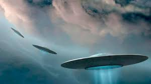

OVNIS Y EXTRATERRESTRES EN LA CIENCIA FICCIÓN P2
Ante el desafío de publicar sus escritos y legitimar su lugar como escritor de ciencia ficción,
Correa (1959a; 1971) transitó desde una narrativa fiel al canon anglosajón, a una escritura híbrida,
donde el imaginario campesino tuvo una función esencial.
Los cuentos que marcaron su internacionalización proponían escenarios abstractos y anónimos. Así, El
último elemento describía "cadenas montañosas desgastadas por una erosión de milenios. Llanuras
salpicadas de zonas radiantes, rodeadas por imponentes anillos rocosos. Nubes de gases blancos,
extendidas en largas guedejas" (Correa, 2016, p. 214). Meccano, por su parte, figuraba "Un sol
achatado, envuelto en un anillo flameante, derramaba un fulgor verdoso sobre la solitaria cabeza,
las rocas y colinas oscuras" (Correa, 2016, p. 182). Alter Ego transcurría, íntegramente, en una
habitación anónima (Correa, 2016, p. 13-16).
Otros cuentos que adherían al canon anglosajón describían atmósferas donde sus personajes
desplegaban tramas inspiradas en conspiraciones políticas, conquistas del espacio, el apocalipsis
atómico o el universo de la guerra fría: Vladimir, Jack y el Profesor Petrov recorriendo el Mar de
las Lluvias en la Luna, La esfera Lunar (Correa, 2016, p. 163-173); Ilya Kachur, Ivan y Volodia, en
las arenas de Marte, Carrusel (Correa, 2016, p. 196-205); Finlay, Morris y Johnson, explorando el
desierto rojo de Marte, La bestia marciana (Correa, 2016, p. 269-274); El profesor Blazov, Dimitri,
Vania, Alexis, en el Mare Ibrium, El ataque de los selenitas (Correa, 2016, p. 281-294).
No obstante, su tercera novela publicada en Chile, El que merodea en la lluvia (Correa, 1962),
incorporaba paisajes rurales del centro-sur, flora y fauna chilenas, mitos y folklore nacional
relativo al demonio, inaugurando, así, un novedoso sello que se repetiría en varios de sus cuentos
(Correa, 2016) y novelas (Correa, 1972). La obra marcó un punto de inflexión en su concepción de lo
fantástico, al reconfigurar tanto los escenarios que daban lugar a la ficción, así como la
construcción de los personajes y la trama. El mismo Correa (2015) la definía como la más chilena de
sus novelas: "(...) Un relato campesino, con creencias de campo, leyendas y mitos que en este caso
ocultan una realidad relacionada con la ciencia ficción y el horror cósmico. Me inspiré en El color
que cayó del cielo, de Lovecraft" (s/p). Se abría, así, una vía creativa, a partir de la cual Correa
(1969) comenzó a figurar una identidad y una ciencia ficción, propiamente, chilena, a partir de
tópicos internacionales.
Su tierra natal, Curepto -voz mapuche que significa viento, aire- al igual que todo el territorio
nacional, estaba poblada de mitos y leyendas. Como señala Plath (1983), en las provincias de Talca y
el Maule circulaban diversas historias; entre ellas, se cuenta que en una hacienda de Curepto
habitaba la viuda de un rico propietario, dama que, a pesar de su bondad, entró en comunión con el
diablo (La viuda espirituada, p. 176). También es conocida la historia de El jinete sin cabeza del
paso el maqui (p. 177), joven que, tras su horrorosa muerte, aparecía infundiendo pavor entre los
habitantes. Célebre devino el barco español Oriflama que en su viaje desde Cádiz rumbo al puerto de
Callao se hundió en 1770 frente a la costa de la playa la Trinchera, comuna de Curepto; ahora se
cuenta la historia del "Oriflama, cementerio flotante" (p. 187-188). De este modo, el demonio, los
fantasmas y las fuerzas ocultas circulaban en el imaginario sureño, tópicos que tuvieron, en la obra
de Correa, un tratamiento singular a la luz de los códigos de la ciencia ficción.
Bajo esta perspectiva, El que merodea en la lluvia (Correa, 1962) ponía en juego una conjunción de
múltiples elementos fantásticos, buscando producir un relato novedoso y, propiamente, chileno. En
efecto, los hechos tienen como escenario el campo chileno y exponen al lector a un misterio: tras
explorar el Mar de las Tormentas en la Luna, el cohete Luna VII aterriza en las cercanías de un
villorrio, El Guindo, donde comienzan a producirse una serie de hechos enigmáticos -extraños olores;
movimientos y sonidos súbitos- y en el cual mueren, bajo circunstancias inexplicables, un par de
lugareños. El dilema tendrá como protagonistas a Salvador, amigo de Celinda, sobrina del patrón (Don
Carlos); Dmitri Stepanov, joven ingeniero ruso; y al Acechante, el Oculto o el Merodeador, presencia
anónima e inaprehensible que estará en el centro del enigma.
La historia se desarrolla en una localidad sureña - "la carretera se bifurcaba yendo a dar la nueva
rama a un grupo de casas de barro en mal estado, a medias ocultas por maquis, boldos y canelos, los
cuales se alineaban a la vera de la huella (Correa, 1962, p. 33-34); los oficios campestres marcan
la identidad de algunos personajes - "(...) el itinerario del carbonero, poco variado - de El Guindo
a su horno, y de éste a El Guindo, y una que otra aislada excursión por el bosque" (p. 146); "Don
Panta, cazador de conejos de El Guindo, me contó después que los perros estaban aterrorizados, y que
por eso se retacaron" (p. 20); también hay alusiones a la fauna que habitaba el lugar donde cayó el
Luna VII: "¡Espléndida situación para un monumento! Los conejos y los tiuques tendrían un punto
ideal para intercambiar - comentarios sobre la espectacular hazaña" (p. 12).
La tensión, el misterio y la atmósfera narrativa se juegan en el vínculo permanente entre el
imaginario campestre asociado al diablo y el deseo de encontrar una explicación racional para los
inquietantes fenómenos que se viven en el pueblo. El ser, a quien se atribuyen los hechos, solo se
insinúa, pero nunca se muestra concretamente, dejando entonces abierta la pregunta por su verdadera
naturaleza. Salvador, "El Elegido" será el protagonista de la investigación y el artífice de su
develamiento.
En la misma época en que fueron publicadas sus primeras novelas -Los altísimos (1959a), Alguien mora
en el viento (1959b) y El que merodea en la lluvia (1962)- Correa (1971) escribió varios cuentos que
trataron sobre el tema extraterrestre y en los cuales el imaginario chileno y la mención del demonio
tuvieron una significativa presencia.
El Escondite, reviste especial interés. Buscando huir de sus perseguidores Ignacio vuelve a su
pueblo natal cercano a Licantén, donde, finalmen te, reencuentra el escondite predilecto de su
niñez; se trataba de un hoyo cubierto por matorrales -"(...) un macizo de maquis, entre cuyas raíces
se abría algo como una madriguera de zorros" (Correa, 2016, p. 208)- en cuyas profundidades se
alzaba una construcción excepcional. Sin embargo, al comenzar a excavar se produce un hecho inédito:
"El objeto se desprendió de la tierra, y ascendió lentamente, rozando la ladera, apartando las remas
que cobijaban la secreta entrada al refugio. Y siguió ganando altura, mientras él, tambaleante,
retrocedía entre los maquis" (Correa, 2016, p. 212-213). Finalmente, y ante su asombro "La esfera
aceleró, y en pocos segundos se perdió en el espacio (...) el objeto que permaneciera tantos años
sepultado a no menos de dos metros de él, y que ahora, recuperaba la libertad, empezaba a penetrar
en el Cosmos" (Correa, 2016, p. 212-213). Él, en cambio, sucumbía ante sus captores.
En el cuento El Feligrés,Correa (2016) vuelve al tema del bien y el mal, mediante la historia del
párroco de la iglesia de El Paso, ubicada en un villorrio de humildes casas en los faldeos
montañosos. Chuma y Pancho han avistado un objeto envuelto en una luz verde que descendía desde el
cielo, visión que les sugiere la intervención del demonio; sin embargo, se trata de un ser venido
del espacio, el cual ofrece al viejo sacerdote llevarlo a un planeta donde no hay enfermedades,
guerras o crímenes; su gente goza plena salud. Después de algunas cavilaciones, finalmente, acepta:
"Llevaré conmigo al Santísimo Sacramento. No le importa ¿verdad?" (Correa, 2016, p. 232). El cura
podría, en su nueva morada, recobrar la juventud.
4. Hugo Correa (Jonas) y "El amigo de los discos voladores"
Si hay un relato en el cual Correa conjuga, de manera muy explícita, su investigación sobre los
OVNIS y la creación literaria es "El amigo de los discos voladores", historia publicada en la
revista Mampato bajo el seudónimo de Jonas (Correa, 1975b).
En seis capítulos el relato expone las aventuras de Alejandro, su perro Toqui y un disco volador.
Parecería ser un relato tradicional, sin embargo, las historias ilustran con nitidez las tesis de
Plantier (1953) y poseen, a su vez, una clara identidad chilena, al describir la flora y fauna
sureñas -romeros, boldos, espinos, maquis, jotes-, así como sus paisajes -montañas, cerros y campos.
El nombre de la mascota, Toqui, tampoco es azarosa, puesto que evoca la designación mapuche para sus
líderes militares y, recuerda, también, el río que atraviesa la hacienda Los siete ojos del diablo
de su novela Los ojos del diablo (Correa, 1972), cuyo dueño, contaban los lugareños, había pactado
con el diablo7.
La historia debuta en un escenario campestre chileno y revela las razones del encuentro con el OVNI.
Refutando los dichos de Edelmira -la cocinera que le había sugerido la presencia del diablo en la
bodega de la casa-, Alejandro, un niño de diez años, reconstruye las vívidas imágenes oníricas que
habían precedido su despertar:
Un disco volador herido (...) Los discos voladores son seres vivos que se generan en el espacio
interplanetario. Poseen una gran inteligencia. Carecen de miembros, porque no fueron creados para
habitar un planeta. Pero en cambio tienen vísceras para captar la energía cósmica, que les sirve de
alimento y medio de propulsión. Son capaces de desplazarse por el espacio a vertiginosas
velocidades. Todo eso había soñado (Correa, 1975b, p. 13).
Continuando su reflexión, el platillo dirá: "Los discos voladores son animales: he ahí el secreto.
Como han sobrevolado la tierra durante milenios, conocen perfectamente a los hombres e incluso
entienden sus diversos lenguajes. Y son capaces de comunicarse mentalmente con ellos" (Correa,
1975b, p. 13). Concluía: "Yo no tengo padres. Cada disco se genera solo en la práctica, en el vacío
interplanetario" (Correa, 1975b, p. 16). Así, la historia ilustraba, literariamente, cada una de las
tesis de Plantier (1953): los ovnis y los extraterrestres pueden ser considerados seres anaerobios
generados en el cosmos, capaces de generar su propia energía.
El disco volador herido por un meteorito había contactado al niño a través de la telepatía,
solicitando su ayuda. Alejandro logra extraer el objeto y el disco, a cambio, le ofrece su amistad8
y lo invita a vivir distintas aventuras, ya que entre sus habilidades se encontraba la percepción de
llamadas mentales; no todas, pero si las de quienes realmente se hallaban en algún grave peligro y
eran inocentes, como le advertirá más tarde.
Pero no solo el imaginario del campo chileno es reconstruido. Si bien la primera aventura relata el
rescate de un niño negro del inminente ataque de un león en la selva africana (Correa, 1975c), las
posteriores entregas trascurren en América Latina: Argentina, donde Alejandro, junto al ovni,
intervienen para favorecer el rescate de un importante personero que ha sido secuestrado por un
grupo de guerrilleros (Correa, 1975d); Ecuador, en cuyas costas 2 niños colombianos navegan a la
deriva en una balsa, tras el naufragio de un barco turístico; Alejandro y el Ovni los rescatan y los
llevan a Perú (Correa, 1975e).
Después de cuatro capítulos la revista Mampato suspendió la historia entre los números 263 y 269; su
regreso en el número 270 relata la historia de una mujer viuda con dos hijos pequeños que vive en
Ciudad de México y que está pronta a ser apresada; el disco le advierte a Alejandro que la policía
busca inculparla en un delito que no ha cometido (como vivió en USA quieren acusarla de espionaje);
el padre de la mujer, un gran político mexicano, había acusado al actual jefe de la policía de
corrupto y, por ello, cobrarían venganza (Correa, 1975f).
Las aventuras de Alejandro y el disco volador terminan con el viaje más extremo de la historia, al
visitar el interior de un volcán situado en la Antártida. En ese inaudito lugar se encuentran con un
Variso, enigmáticos pobladores que moran las entrañas de la tierra (Correa, 1975g).
De este modo, tanto la concepción de los personajes -ovni producido por el espacio interestelar- así
como la trama -aventuras en el campo y Latinoamérica- confirman la conjunción de teorías ufológicas
e imaginario chileno en favor de la creación literaria de ciencia ficción.
